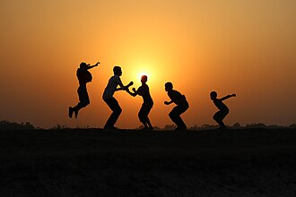
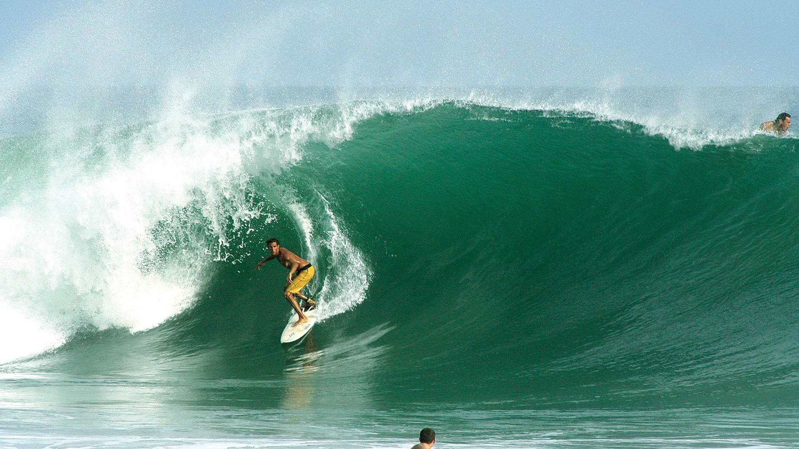
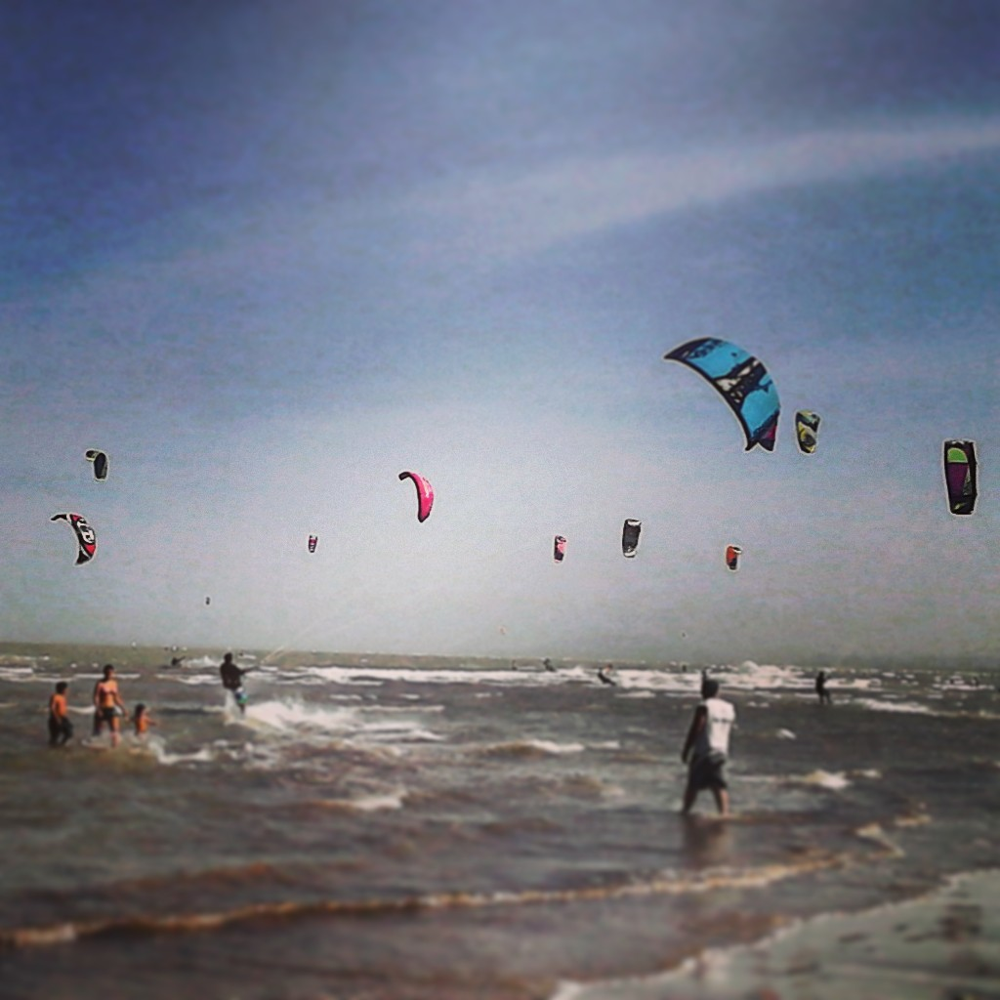
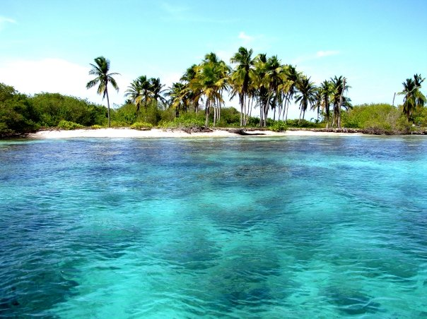
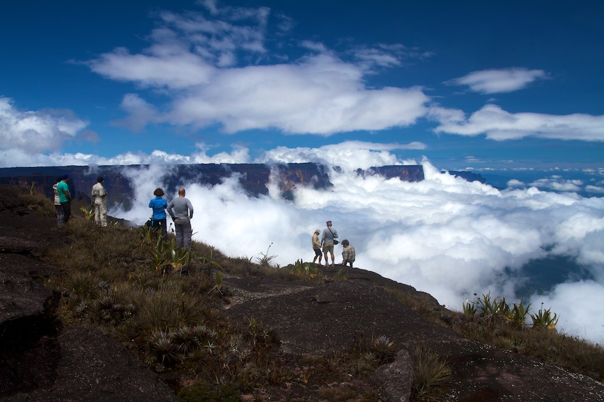
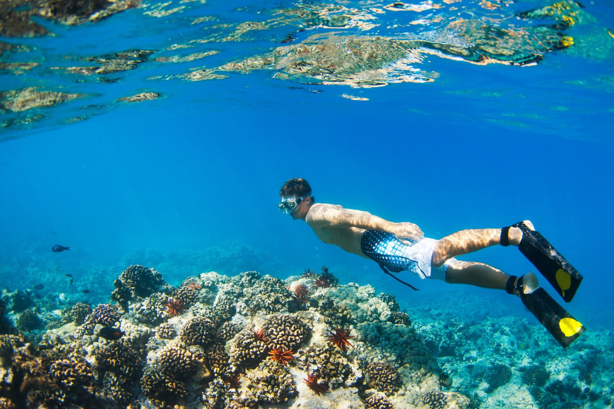
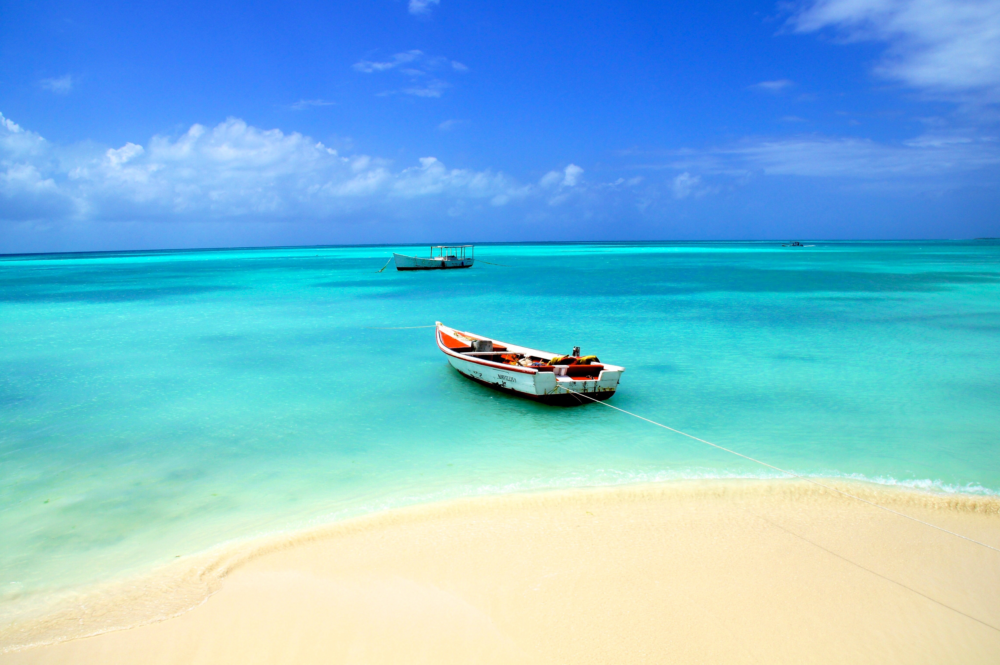

VENEZUELA'S RECREATIONAL SPORTS
Venezuela's extraordinary natural diversity — from Caribbean coastlines and Andean peaks to tropical rainforests and vast river systems — creates a playground of almost limitless recreational sporting possibilities. Whether you seek the rush of surfing a Caribbean wave, the serenity of kayaking through a jungle river, or the exhilaration of trekking to the base of Angel Falls, Venezuela's landscapes are your arena.

Recreational sports in Venezuela are as diverse as the land itself. Every region offers its own unique outdoor experience, shaped by the extraordinary geography of a country that contains desert, mountains, jungle, grasslands, and Caribbean sea all within its borders. The recreational opportunities here are genuinely world-class — and remarkably accessible to any visitor willing to explore.
SURFING

Venezuela's Caribbean coastline offers some of the finest and most undiscovered surfing in South America. El Palito in Carabobo, Adicora on the Paraguaná Peninsula, and various breaks along the Sucre coast deliver consistent waves suited to all skill levels. The warm Caribbean water, year-round wave activity, and relatively uncrowded nature of most Venezuelan surf spots make this one of the continents most appealing surf destinations.

Adicora on the Paraguaná Peninsula is Venezuela's premier surf destination, celebrated for its consistent trade winds and reliable waves that draw surfers and windsurfers from across South America and the Caribbean. El Palito in Carabobo state is another excellent option, closer to Caracas and with waves suitable for beginners and intermediate surfers.
KAYAKING & CANOEING

Venezuela's extraordinary network of rivers, lagoons, mangroves, and Caribbean cays makes it one of the most diverse and rewarding kayaking destinations in South America. Paddling through the dense mangrove tunnels of Morrocoy National Park, exploring the crystal-clear cays of Los Roques by sea kayak, or navigating the powerful whitewater of the Orinoco tributaries are all experiences of breathtaking natural immersion available to visitors of varying skill levels.

Morrocoy National Park on Venezuela's central Caribbean coast is the country's top kayaking destination, offering an extraordinary network of mangrove channels, coral cays, and crystal lagoons to explore by paddle. Guided kayak tours operate daily from the gateway towns of Tucacas and Chichiriviche, taking paddlers through tunnels of red mangrove roots alive with birds, iguanas, and marine life.
HIKING & TREKKING

Venezuela is one of the world's great hiking destinations, offering trails that traverse some of the most dramatic and otherworldly landscapes on Earth. The trek to the summit of a tepui — those ancient table-topped mountains that inspired Arthur Conan Doyle's "The Lost World" — is among the most extraordinary hiking experiences on the planet. The trail to the base of Angel Falls winds through dense jungle to deliver one of nature's most staggering spectacles.
Mount Roraima — the most iconic tepui in Venezuela — is the ultimate Venezuelan trekking experience, a 6-day round trip through surreal prehistoric landscapes atop a summit plateau that feels like another world. For something closer to Caracas, El Ávila's northern trails offering views over the city and down to the Caribbean coast are a spectacular introduction to Venezuelan highland trekking.
SCUBA DIVING & SNORKELING

Venezuela's Caribbean waters hide a spectacular underwater world that ranks among the finest diving and snorkeling destinations in the Western Hemisphere. Los Roques Archipelago National Park — with its pristine coral reefs, crystal visibility, and extraordinary marine biodiversity — is the crown jewel of Venezuelan underwater recreation. Divers can explore dramatic coral walls, historic shipwrecks, and turtle cleaning stations in waters of exceptional clarity.

Los Roques Archipelago National Park is Venezuela's undisputed diving and snorkeling capital, accessible by a short flight from Caracas to Gran Roque island. The park's waters host over 50 named dive sites with visibility regularly exceeding 30 meters. Mochima National Park near Cumaná is a more accessible alternative, offering excellent reef snorkeling around its chain of islands with sea turtle encounters and colorful reef fish.
Come to Venezuela and let its extraordinary landscapes become your playground. Ride a Caribbean wave at sunrise, paddle through a mangrove lagoon alive with wildlife, trek to the edge of a tepui cliff as clouds roll in below you, or drift weightlessly above a coral reef in the crystal waters of Los Roques. In Venezuela, recreational sport is not just exercise — it is an encounter with one of the most spectacular and diverse natural environments on Earth. Come and experience it.